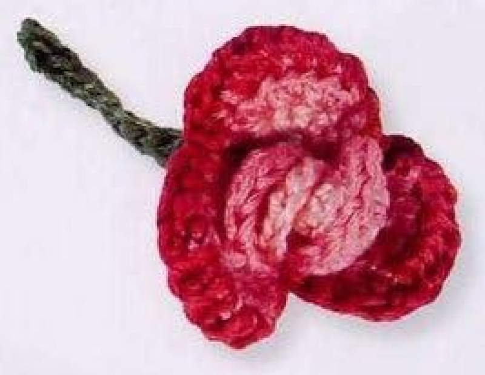
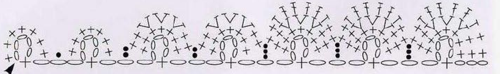
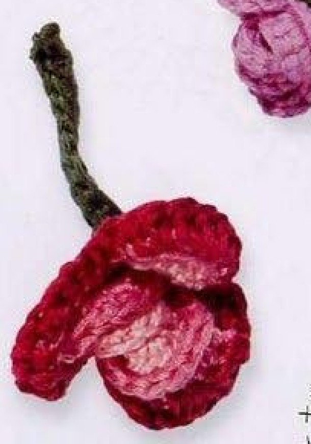
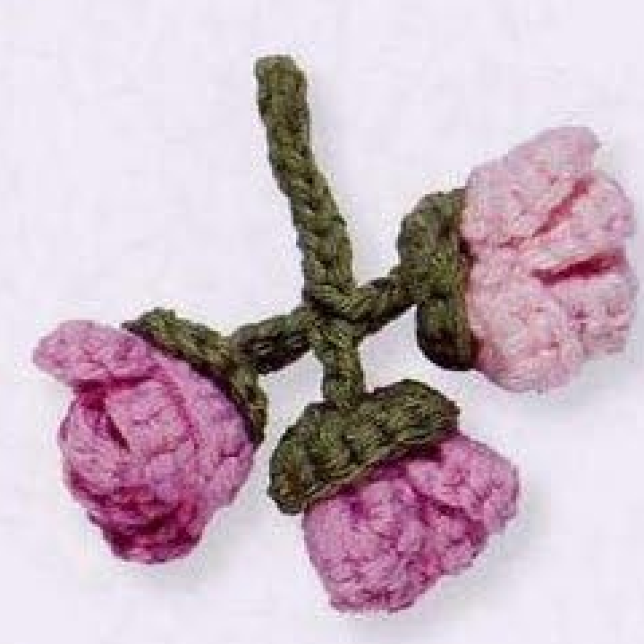
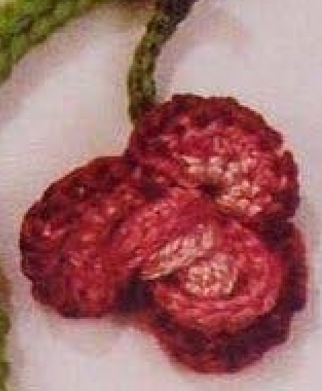
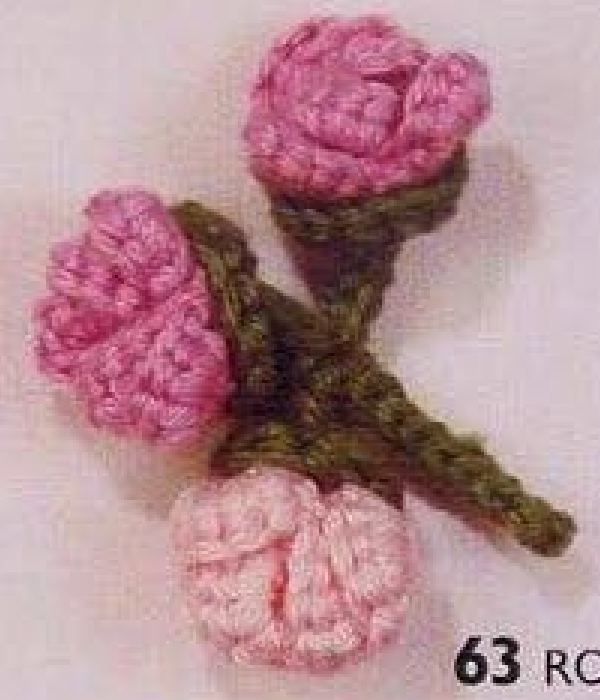

Crochet Rolled Rose and Rosebuds includes an open rose and a three-bud branch, each with its own stem and sepal finishing. The open flower is formed from a strip whose later rows enlarge only selected petals, while the buds use a shorter pale-pink strip. This guide follows pattern 63 in Lesley Stanfield’s 100 Flowers to Knit & Crochet, preserving both versions and their assembly in US crochet terms.

Key Takeaways
- Use embroidery cotton in pale pink A, mid pink B, deep pink C, and green D.
- The open rose starts with seven picots, then enlarges five petals in B and only three in C.
- Roll the rose with the smallest petals at its center and stitch it securely.
- Make three buds from six-picot A strips, using only their first petal row.
- The open rose has an eleven-chain stem and a three-round sepal cup.
- The buds share a branching stem and each receive a separate two-round sepal cup.
CROCHET ROLLED ROSE AND ROSEBUDS PATTERN
Project: One open rose and a branch of three buds. The entry is among the book’s intermediate designs. US terms are used below. Hook, gauge, total quantity, and finished dimensions are not specified.
| Skill level | Intermediate designs in the source. Practical guidance: follow selective row lengths, roll and stitch strips, and assemble stems and sepals. |
|---|---|
| Base size | One open rose and 3 rosebuds. Measurements are not specified. |
| Yarn | Embroidery cotton: pale pink A, mid pink B, deep pink C, green D. |
| Quantity, hook, gauge | Not specified. Choose a hook suited to the embroidery cotton and assess a strip sample. |
| Notions | Scissors and a blunt needle for rolling, sepal sewing, and finishing. |
| US abbreviations | ch = chain; sc = single crochet; hdc = half double crochet; dc = double crochet; sl st = slip stitch; RS = right side; WS = wrong side. UK dc = US sc; UK htr = US hdc; UK tr = US dc. |
| Rose picot row | With A, ch 5, skip 4 chains, sc in the next chain; [ch 8, skip 4 chains, sc in the next chain] 6 times. Turn. 7 picots. |
| Rose row 1, WS | Ch 1, work 7 sc in the first picot; [sl st over the 3-chain section, 7 sc in the next picot] 6 times. Fasten off. Do not turn; join B in the first chain. |
| Rose row 2 | Ch 1; [sc in each of the next 2 sc, 2 hdc in each of the next 3 sc, sc in each of the next 2 sc, sl st over the 3-chain section between picots] 5 times. Fasten off. Do not turn; join C in the first chain. |
| Rose row 3 | Ch 1; [sc in each of the next 2 sc, hdc in the next hdc, dc in each of the next 4 hdc, hdc in the next hdc, sc in each of the next 2 sc, sl st over the 3-chain section between picots] 3 times. Fasten off. Roll with smallest petals at the center and stitch. |
| Open-rose stem | Join D at the rose base, leaving an approximately 10 cm, 4 inch, end. Weave the end across between successive chains while making ch 11. Skip 1 chain and sc in each of the next 10 chains. Fasten off. |
| Open-rose sepals | Ch 5, wrap the chain around the stem, and sl st in its first chain. Round 1: ch 1, 9 sc in the 5-chain space, sl st in the first sc; 9 stitches. Round 2: ch 1, sc in each sc, sl st in the first sc. Round 3: ch 1, [2 sc in the first sc, sc in each of the next 2 sc] 3 times, sl st in the first sc; 12 stitches. Fasten off, leaving an end to sew the sepals to the rose base. |
| Rosebuds, make 3 | With A, work the picot row as for the rose but stop after 6 picots and turn. Work row 1 with the bracketed group repeated 5 times. Fasten off. For buds this first petal row is RS. Roll and stitch each strip into a bud. |
| Shared bud stem | With D, ch 12, sl st in the first bud base, turn, and sl st in each of 4 chains. Ch 4, sl st in the second bud base, turn, and sl st in each of those 4 chains. Ch 4, sl st in the third bud base, turn, and sl st in each of those 4 chains and the first 8 original chains. Fasten off. |
| Bud sepals | Holding a bud in the left hand, wrap yarn once around the finger and bud base to form a ring. Round 1: ch 1, 6 sc in the ring, pull the end to close, sl st in the first sc. Round 2: ch 1, 2 sc in each sc, sl st in the first sc. Fasten off. Finish all 3 buds the same way and sew sepals to their bases. |
Understand the Open Rose and the Bud Version
The open rose begins with seven little foundation picots connected by three-chain sections. The first petal row fills all seven. The second row enlarges only five, and the third enlarges only three. The untouched smaller petals become the inner part when the strip is rolled, while the largest deep-pink petals sit outside.
The buds use a shorter foundation of six picots and only the first petal row in A. Their first row is treated as the right side when rolling, whereas the open rose’s first row is labeled wrong side. Keep those orientations separate instead of rolling both versions by the same assumption.
Both versions include green finishing, but their stem and sepal recipes differ. The open rose receives a single stem and a three-round sepal cup. The three buds share a branched stem and receive individual two-round sepal cups. A nearby directory leaf is a separate knitting pattern, not an extra crochet component in this entry.
Prepare Embroidery Cotton and Sewing Ends
Use pale pink A, mid pink B, deep pink C, and green D embroidery cotton. The open flower uses all three pink shades, while the written bud recipe uses A only. The source photos show shade variation among buds; that visible variation does not add mandatory B and C rows to the bud instructions.
No hook size, numerical gauge, total yarn quantity, or finished flower dimensions are supplied. Choose a hook suited to your embroidery cotton and examine the first strip. Its small stitch groups need to remain flexible enough for rolling, with identifiable chain sections between the picots.
Keep scissors and a blunt needle nearby for rolling and stitching. The open-rose stem instruction gives an approximately ten-centimeter, four-inch, starting green end. This is a source end-length measurement, not a finished stem measurement. Other sewing ends have no specified numerical lengths; retain enough to secure components comfortably.
US Terms and the Picot Foundation
UK double crochet becomes US single, half treble becomes US half double, and treble becomes US double. These heights are used in successive petal rows. All are completed individual stitches; the rose strip does not use partial-stitch clusters or popcorn closures.
The foundation’s picots are made with a five-chain opening and later eight-chain groups. After skipping four chains, the single crochet in the next chain closes the small loop, while each later group also leaves a three-chain connecting section. Those sections are crossed by slip stitches in the petal rows.
Do not replace the foundation with a plain long chain or a row of isolated rings. The printed chart shows the seven connected picots and the selective later petal rows. Keep the three-chain connectors visible so you can move from one filled picot to the next as directed.

Step 1: Make Seven Picots for the Open Rose
With A, chain five, skip four chains, and single crochet in the next chain. Then chain eight, skip four chains, and single crochet in the next chain. Repeat that bracketed eight-chain sequence six times after the opening picot, making seven picots in total.
Turn as the source directs at the end of this foundation row. Count the seven loops and the connecting chain sections before filling them. The opening group is already one of the seven, so six repeats are sufficient; seven repeats would add an eighth picot.
Keep the small foundation loops distinguishable from the longer connectors. The next row works seven singles into each picot and crosses the three-chain sections between them. Filling a connector instead of a picot changes the strip and makes the chart difficult to follow.
Step 2: Fill All Seven Pale-Pink Petals
For row 1 with the wrong side facing, chain one and work seven US singles in the first picot. Slip stitch over the three-chain section, then work seven singles in the next picot. Repeat that bracketed connector-and-next-picot group six times.
All seven picots are filled with seven actual singles each. Keep those groups distinct from the slip stitches crossing the connectors. The groups form the small scallops that will either remain small or receive additional rows depending on their position in the strip.
Fasten off A. Do not turn; join B in the first chain as directed. The later color row begins back at the strip’s first-chain location with the same orientation, rather than simply continuing from the far end and turning into an ordinary return row.
Orientation checkpoint: Turn after the picot foundation, then work the open rose’s first petal row as WS. Do not turn at the later B and C row joins.
Step 3: Enlarge Only Five Petals in Mid Pink
With B, chain one. In the next seven-single group, work a single in each of the first two singles, two half doubles in each of the next three singles, and a single in each of the next two singles. Slip stitch over the three-chain connector between picots.
Repeat that full group five times, then fasten off. The three middle bases each receive two half doubles, producing six middle half doubles between four singles. Each enlarged petal now has ten actual stitches, while the two remaining A petals do not receive this B row.
Do not extend this row across all seven petals. Its five-repeat limit is part of the graduated strip construction. After fastening off, do not turn; join C in the first chain. This prepares the largest row at the same beginning of the strip.
Step 4: Enlarge Only Three Petals in Deep Pink
With C, chain one. Work a single in each of the next two singles, a half double in the next half double, a double in each of the next four half doubles, a half double in the next half double, and a single in each of the next two singles. Slip stitch over the connector.
Repeat that bracketed group three times and fasten off. The ten-position group retains short single edges, changes the first and last middle positions to half doubles, and raises the four central positions with doubles. Only three petals receive this deepest-pink row.
The finished strip has two smallest A-only petals, two B-enlarged middle petals, and three C-enlarged largest petals. This is useful arithmetic derived from the seven, five, and three row limits. Keep it clear when checking the strip before rolling, rather than describing every petal as having three color rows.
Step 5: Roll and Stitch the Open Rose
Roll the strip with the smallest petals at the center, then stitch it securely as the source directs. Begin at the small-petal end and let the larger sections wrap outside. The deep-pink outer scallops should remain visible around the lighter middle, rather than becoming trapped inside the rolled center.
Arrange the base while stitching so the strip holds its curled form. The source does not give a sewing stitch count or a measured rolling diameter. Use stable attachment points along the base and inspect the front as you work instead of tightening the whole flower into a hard knot.
Keep the rolled structure secure before adding the stem and sepals. Those green components finish the base, but they do not replace the stitching that holds the flower strip together. A loose roll can shift after attachment and hide the graduated petals.

Step 6: Make the Open-Rose Stem and Sepal Cup
Join D at the rose base, leaving an end approximately ten centimeters, four inches, long. As the source directs, weave that end across between successive chains while making eleven chains. Skip one chain and single crochet in each of the next ten, then fasten off.
For the sepals, chain five, wrap that chain around the stem, and slip stitch in its first chain. Chain one and work nine singles in the resulting five-chain space, joining to the first single. The source count is nine actual singles; the chain rise is not added as a tenth stitch.
Work another round with one single in each single and join to the first. For the third round, chain one and repeat two singles in the first base, then one in each of the next two bases, three times. Join to the first single for twelve stitches. Fasten off with an end to sew the sepal cup to the rose base.
The Open Rose and Buds Have Different Sepals
The open-rose cup uses nine singles, another nine-stitch round, then increases to twelve. Each bud cup begins with six singles in a wrapped ring and doubles them to twelve in its second round. Keep these recipes separate during assembly.
Step 7: Make and Roll Three Pale-Pink Buds
With A, work the same foundation picot sequence but stop after six picots and turn. Fill the first picot with seven singles after the chain-one rise, then work the connector-and-next-picot bracket five times. Fasten off after this first petal row.
For buds, the source notes that the first petal row is the right side. Roll and stitch the strip into a bud with that orientation. Do not add the B five-petal row or C three-petal row from the open flower; the bud version deliberately stops after its first petal row.
Make three buds in total, retaining usable base locations for their shared stem and sepals. The photographed buds vary in pink shade, but the written recipe uses A. Treat another shade as a color variation while preserving the six-picot strip and right-side rolling instruction.

Step 8: Connect the Buds on Their Shared Stem
With D, chain twelve and slip stitch into the base of the first bud. Turn and slip stitch in each of four chains. Chain four, slip stitch into the second bud base, turn, and slip stitch into each of those four chains. This establishes the second branch from the shared route.
Chain four again, slip stitch into the third bud base, turn, and slip stitch in each of those four chains and then the first eight original chains. Fasten off. Keep the branch returns and original eight-chain continuation distinct so the stem connects all three buds as printed.
Do not replace this sequence with three separately sewn stems unless clearly making an adaptation. The source’s turns and four-chain returns create one branched component with attachments to the bud bases. Check that all three connections are secure before adding the sepal cups.
Step 9: Make Each Bud’s Two-Round Sepals
Holding a bud in the left hand, wrap yarn once around the finger and bud base to form a ring. With green D, chain one and work six singles into the ring. Pull the end to close it and join to the first single. The source count uses six actual singles, not the chain rise as another stitch.
For the second round, chain one and work two singles in each single, then join to the first single and fasten off. The six bases produce twelve actual singles. Finish the second and third buds in the same way and sew the sepal cups to their bases.
Secure all sewing ends and inspect the stem and sepal connections from both sides. The cups should support the rolled bud bases without pulling the pink petals closed into a new shape. No numerical blocking dimensions or pressing temperature are supplied in this entry.


Troubleshooting and Clearly Labeled Variations
If the open rose has no graduated petals, check the later row limits of five and three rather than seven throughout. If a bud is too open, review its six-picot first-row-only recipe and right-side rolling. If the sepal cup count is wrong, distinguish the open rose’s nine-stitch start from each bud’s six-stitch start.
Changing pink shades is an optional color variation. Different embroidery cotton or hook choices can change dimensions, but the source supplies no graded sizes or gauge formula. Added use ideas include a floral applique arrangement on a textile panel or accessory, attaching through stable green bases while leaving the rolled pink forms visible.
Variation guidance: Additional leaves, extra buds, three-color bud rows, or altered stem routes are adaptations. Keep the complete open rose and three-bud recipes clear.
Rolled Rose and Rosebuds at a Glance
- Seven-picot open-rose strip, with later rows across five and three petals.
- Roll with the smallest petals at the center.
- Open rose: eleven-chain stem and three-round sepals.
- Three six-picot A buds, rolled with the first petal row as RS.
- Shared bud stem and separate two-round sepal cups.
Conclusion
This floral set depends on selective petal rows and two distinct finishing systems. Keep the open rose’s seven, five, and three limits separate from the six-picot buds, then follow the correct stem and sepal sequence for each version. The compact card contains both complete source recipes in US terms, while the chart shows the graduated strip. Click the Pin to return to the pattern when you are ready to make the set.
Source and Tags
Source: Lesley Stanfield, 100 Flowers to Knit & Crochet, pattern 63 Rolled Rose and Rosebuds. Instructions, strip chart, open roses, and bud branch are on printed page 80, PDF page 74; directory examples are on printed page 25, PDF page 20. Source photographs show finished work, not progress images. The nearby Large Leaf is a separate knitting pattern. The recipe is translated into US terms, with added guidance identified separately.
Rolled RoseCrochet RosebudsEmbroidery CottonGreen SepalsBranched StemUS Crochet Terms